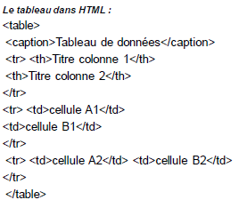
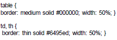
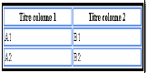
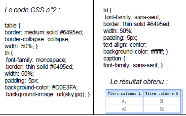

- Principe des CSS
- Format CSS
- Appel d’un fichier .css
- Directement dans le header du fichier HTML
- Appliquer un style à des balises
- Exemple CSS
- Des commentaires dans CSS
- Utiliser les classes
- L'attribut id
- Les balises universelles
- Exemple
- Imbrications de balises
- Taille du texte
- Polices
- Exemple
- Alignement simple
- L'indentation: la mise en retrait du texte
- Effets de style
- Les majuscules en CSS
- La décoration
- Les couleurs
- La notation hexadécimale
- La méthode RGB (Red-Green-Blue)
- Le fond
- La couleur de fond
- Exemple
- L'image de fond
- Effets sur les liens
- Les pseudo-formats
- Au passage de la souris
- Au moment du clic
- Première lettre et première ligne
- Retrait des listes
- Exemple
- Représentation de la puce
- Pour les listes non ordonnées (ul)
- Pour les listes ordonnées (ol)
- Changer l’image de la puce
- Dimensionnement et positionnement
- Mise en page
- Tableaux
- Formulaires
Toute la mise en forme du tableau et de ses cellules est à déclarer par le biais des CSS

• Les options d'un cadre de tableau en trait continu (solid), noir (#000000) et d'épaisseur moyenne (medium) ;
• et des bordures de cellules en traits continus (solid) fins (thin) et bleus ciel (#6495ed).
• Le code CSS, à indiquer dans une feuille de style externe ou dans l'en-tête de la page entre des balises (style type="text/css")(/style), sera celui-ci :
Le code CSS n°1 :

Le résultat obtenu


• On utilise pour fusionner ou non deux bordures adjacentes la propriété border-collapse.
• Cette propriété peut prendre les valeurs suivantes :
• collapse : "Colle" les deux bordures en une
• separate : Affiche les deux bordures distinctement.
• On utilise pour modifier l'espacement entre les cellules et les bordures la propriété border-spacing.
• Pour afficher ou non les bordures des cellules ne contenant aucun contenu visible on utilise la propriété empty-cells. Elle peut prendre deux valeurs :
• show : Les bordures sont affichées.
• hide : Les bordures ne sont pas affichées.
Exemple :
table{empty-cells:show;}
• On utilise la propriété caption-side pour modifier la position de la légende du tableau. Elle peut prendre plusieurs valeurs :
top : La légende est affichée en haut
bottom : La légende est affichée en bas
left : La légende est affichée à gauche
right : La légende est affichée à droite
Exemple :
table{
caption-side:top;
}